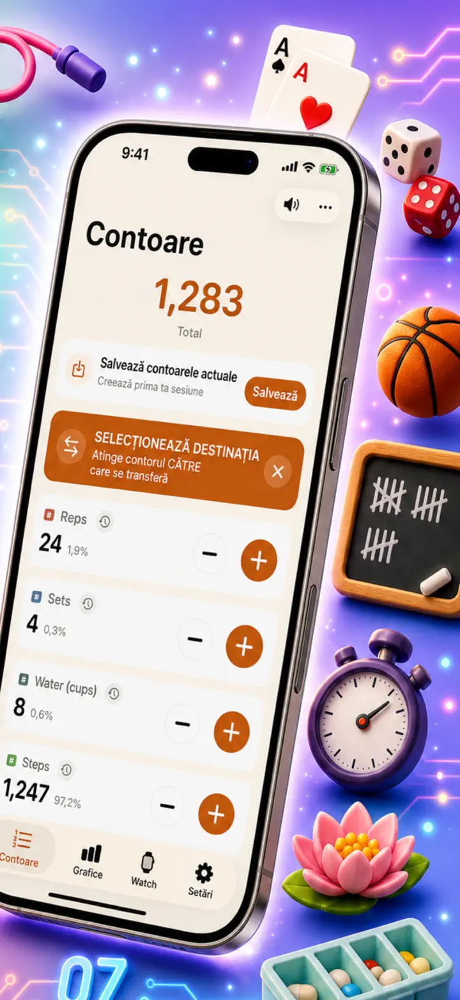
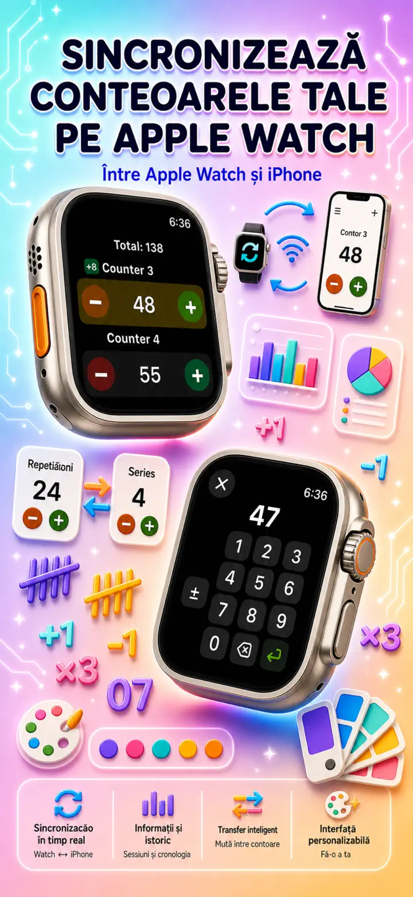
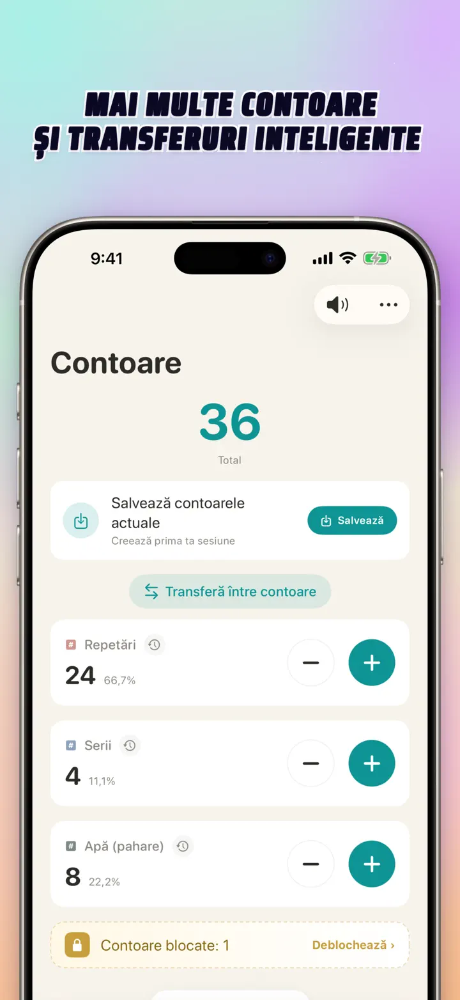
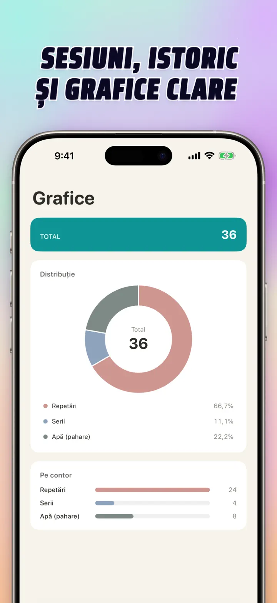
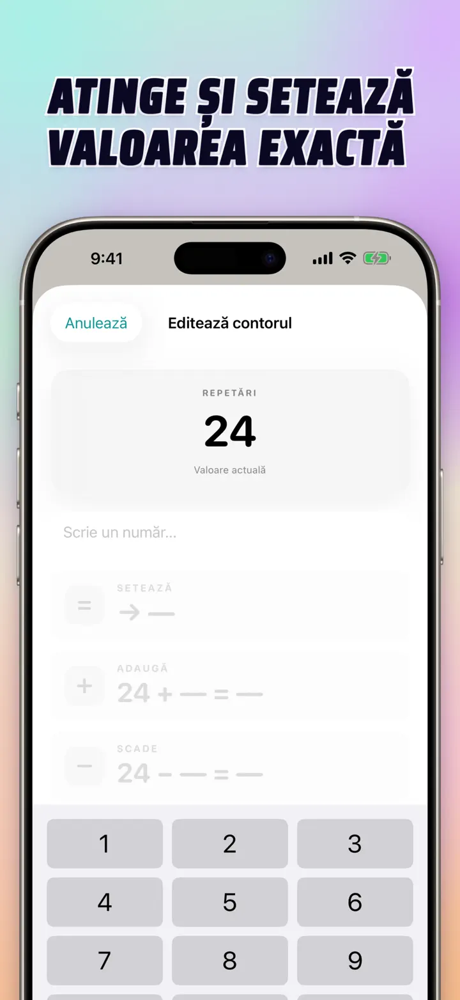
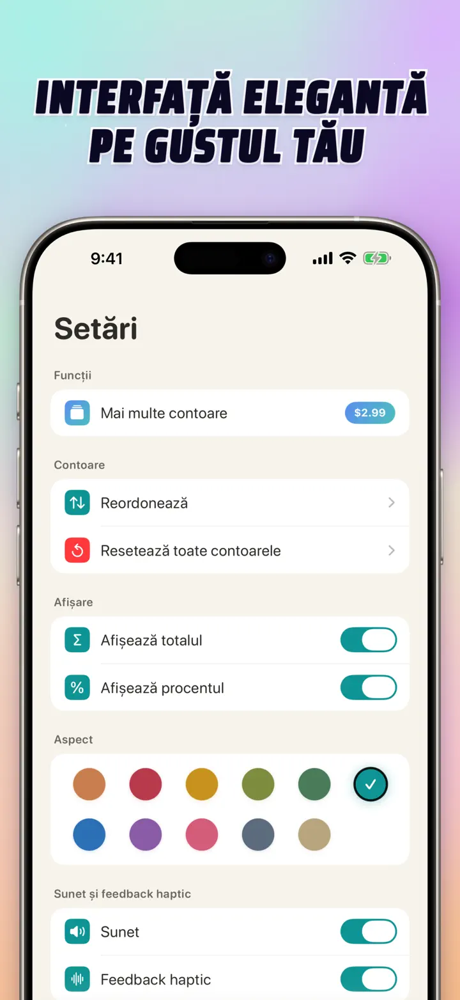
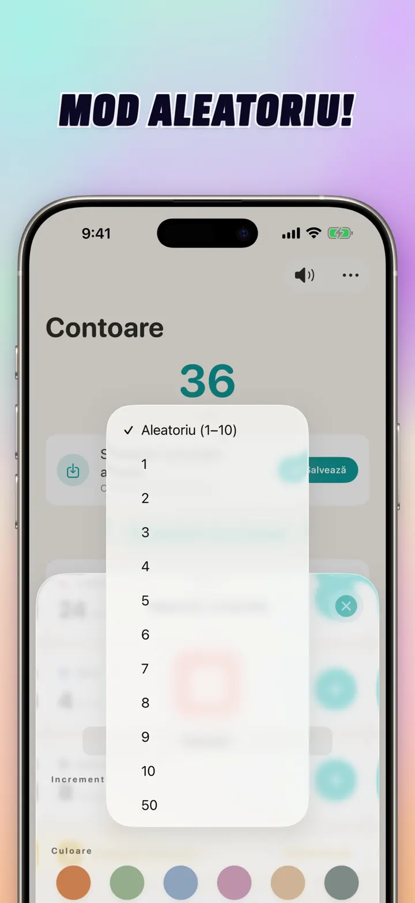

Contor 123
Sync Watch, clicker, scor
Nou: widgeturi pe ecranul principal — atinge +/- pe widget fără a deschide aplicația. Numărător și clicker cu sync Apple Watch, mod aleator, grafice și istoric.
Descarcă din App StoreDespre aplicație
Contor 123 este numărătorul rapid și flexibil pentru iPhone, iPad și Apple Watch. Dă nume fiecărui numărător, alege o culoare și numără orice — serii la sală, rânduri la tricotat, mătănii, puncte în clasă, stoc, scorul jocului. Totul rămâne local pe dispozitiv și funcționează offline.
NUMĂRĂTOARE PERSONALIZATE
- Creează numărătoare separate pentru activități, jocuri, rutine sau liste
- Nume și culoare proprii pentru fiecare
- Trage pentru a reordona
- Ține apăsat pentru numărătoare rapidă în serie
- Complet offline — fără cont, fără cloud
INTRODUCERE DIRECTĂ & OPERAȚII ÎN MASĂ
- Atinge un numărător ca să setezi o valoare inițială direct — nu trebuie să resetezi la zero
- +/- în masă: schimbă un numărător cu orice număr dintr-o atingere
- Transfer: mută o valoare dintr-un numărător în altul fără operație dublă
- Pas personalizat: o atingere adaugă 1, 5, 10, 100 sau valoarea aleasă
- Previzualizare live pentru fiecare modificare
MOD ALEATOR
- Lasă un numărător să aleagă o valoare nouă între 1 și 10 la fiecare atingere
- Adaugă sau scade valori aleatoare cu butoanele + și -
- Util pentru exerciții, jocuri, recompense, activități la clasă și rutine
- Fiecare atingere aleatoare este salvată în istoricul numărătorului
TOTALURI & GRAFICE
- Suma totală a tuturor numărătoarelor dintr-o privire
- Vizualizare procentuală: cât contribuie fiecare la total
- Grafic cu bare interactiv — comută între valoare (#) și procent (%)
- Sortare după valoare pentru clasament instant
ISTORIC & PARTAJARE
- Istoric complet: fiecare adăugare, scădere și editare e înregistrată
- Salvează seturi de numărătoare și reîncarcă-le oricând
- Partajează configurații cu echipa, elevii sau prietenii
SYNC LIVE CU APPLE WATCH
- Actualizează un numărător pe iPhone sau Apple Watch și ambele rămân sincronizate
- Aplicație watchOS cu adevărat nativă — nu doar un companion
- Nume, culori și valori sincronizate pe încheietură
- Atinge pentru a număra, ține apăsat pentru repetare — direct de pe ceas
- Funcționează independent când iPhone-ul nu e la îndemână
PENTRU iPhone, iPad & APPLE WATCH
- Aspecte adaptive pentru orice dimensiune de ecran
- iPad afișează mai multe numărătoare deodată, cu Split View
- Confidențialitate pe primul loc: stocare locală, fără cloud, fără cont
PERFECT PENTRU
- Serii și repetări la sală
- Rânduri la tricotat și ochiuri la croșetat
- Mătănii, tasbih, mărgele de rugăciune
- Puncte în clasă și prezență
- Fotbal, volei, handbal — scor rapid
- Tenis de masă
- Stoc și inventariere depozit
- Jocuri de societate, cărți, canasta, tablă
- Bazine și ture de pistă
- Observare de păsări
- Numărarea participanților la evenimente
- Urmărirea obiceiurilor și obiectivelor
Descarcă Contor 123 și fă fiecare numărare simplă — clar, rapid, privat.
Politică de confidențialitate: https://masawata.net/privacy-policy.html Termeni de utilizare: https://www.apple.com/legal/internet-services/itunes/dev/stdeula/
Capturi de ecran







Contor 123
Nou: widgeturi pe ecranul principal — atinge +/- pe widget fără a deschide aplicația. Numărător și clicker cu sync Apple Watch, mod aleator, grafice și istoric.
Descarcă din App Store